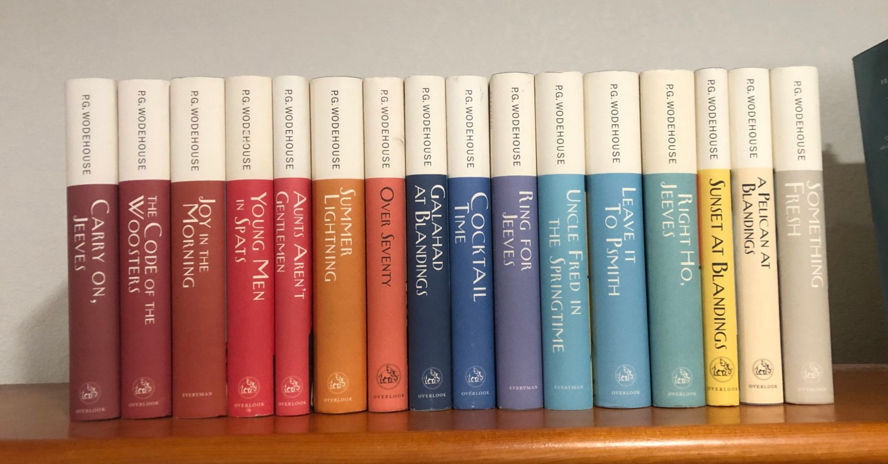

P.G. Wodehouse: Master of the Comic Metaphor
Created · Updated · 708 words
On this day in 1881, Pelham Grenville Wodehouse was born. As a child, he struggled to say his name (he later called it a “frightful label”). All he could manage was his version of Pelham, “Plum,” which was what his friends called him. His fans and readers know him as P.G. Wodehouse. This is a short tribute and introduction to his work.
Still writing very productively into his 90s, he said, “I never want to see anyone, and I never want to go anywhere or do anything. I just want to write.”1 It appears he got his wish. In 90 years, he wrote more than 90 books. He was a successful author, Hollywood screenwriter, and master of comic short story.
But he was always modest about his success: “Ask the first ten men you meet, ‘Have you ever heard of P.G. Wodehouse?’ and nine of them will answer ‘No.’ The tenth, being hard of hearing, will say, ‘Down the passage, first door to the right.’”
A Wodehouse plot is a delightfully outrageous and often tangled adventure. His characters are all caricatures, but even their eccentricities tell the truth about human nature. For example, you’ll notice that they all have simple desires (usually involving relationships or avoiding trouble), which makes them immediately relatable.
He may not have won any Scripture Knowledge Awards as a child, but he was obviously very familiar with the Bible.2 As one fellow put it, he could “nail down a biblical allusion as quickly as Jael, the wife of Heber.” Across 25+ books that I’ve read, I’ve collected dozens of allusions:
- “turning the world from a bleak desert into a land flowing with milk and honey” (Something Fresh, Ch. 5)
- “The spirit was willing, but the jolly old flesh would have none of it.” (Jill the Reckless, Ch. 1)
- “He can rely on me, even unto half my kingdom.” (The Inimitable Jeeves, Ch. 1)
- “Swallowing camels and straining at gnats is what I should call it.” (Heavy Weather, Ch. 1)
But the true genius of Wodehouse is his mastery of metaphor. A few examples will have to suffice here:
- “He had the look of one who had drunk the cup of life and found a dead beetle at the bottom.”
- “Some minds are like soup in a poor restaurant — better left unstirred.”
- “She came leaping towards me, like Lady Macbeth coming to get first-hand news from the guest-room.”
- “He looked like a sheep with a secret sorrow.”
The metaphors are surprising, memorable, and funny. Aristotle believed that facility with metaphor was a mark of genius. If this is true, we have a lot to learn from the comic genius of Wodehouse.
In the chapter on Wodehouse in his book, Writers to Read, Douglas Wilson makes the point that one of the besetting sins of our age is our inability to make a point (even a good one) without sounding shrill.
Wodehouse can help us here. He can help us wield words with joy and wit, not anger and disdain.
Evelyn Waugh said of Wodehouse:
“[His] idyllic world can never stale. He will continue to release future generations from captivity that may be more irksome than our own. He has made a world for us to live in and delight in.”
The joys of reading Wodehouse are many: comic misunderstandings, acrobatic wordplay, surprising metaphors, and hilarious dialogue.
I recall a coffee shop visit where I desperately tried (and failed) to hold back laughter and tears as I read “Uncle Fred Flits By.” This is what awaits you in the stories of Wodehouse.
If you’re new to his books, here are my suggestions for where to start:
- For a full novel, try Code of the Woosters or Leave it to Psmith.
- For short stories, you can’t go wrong with Jeeves. My favorite is Carry On, Jeeves.
- To learn more about his life, check out his “autobiography with digressions,” Over Seventy.
If you want to purchase books from the Wodehouse canon, I’d highly recommend the new Overlook Press editions (also known as the “Everyman Collection”). They’ve been re-releasing his works in a beautiful hardback collection.

I’ve been adding a book or two a year, but doing the math, it seems I should pick up the pace.